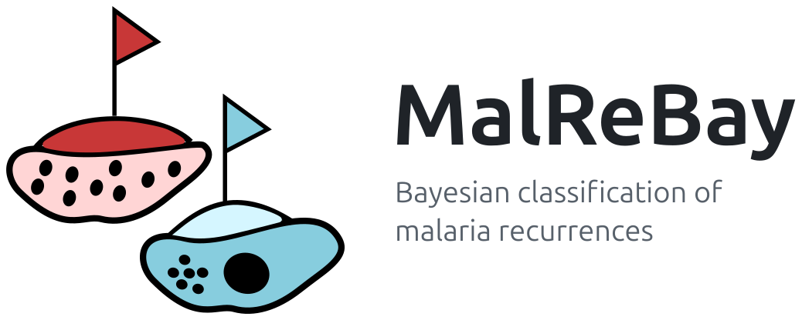

MalReBay is an R package for classifying recurrent Plasmodium falciparum infections in therapeutic efficacy studies (TES). In a TES, patients are treated for malaria and followed up for several weeks. When parasites reappear during follow-up, the recurrence is either a recrudescence, meaning the original infection was not cleared by the treatment, or a reinfection, meaning a new infection acquired after treatment. The two cannot be distinguished clinically.
For each patient, MalReBay compares the parasite genotypes at baseline (Day 0) with those at recurrence and estimates the probability that the recurrence is a recrudescence. The estimate is obtained with a Bayesian model, which accounts for polyclonal infections, the frequency of each allele in the local parasite population, and missing genotyping data.
MalReBay supports the three main genotyping approaches used in TES: microsatellites, the length-polymorphic markers MSP1, MSP2 and GLURP, and amplicon sequencing.
Installation
Installation is required only once per computer and takes approximately 10 minutes. MalReBay’s statistical model is written in Stan, which requires the CmdStan software. CmdStan must therefore be installed before MalReBay, and the steps below should be followed in order.
Prerequisites
-
R version 4.1.0 or later. To check your version, run
R.version.stringin the R console. -
A C++ compiler, which is required to build CmdStan:
- Windows: install Rtools, selecting the version that matches your R version.
-
macOS: run
xcode-select --installin the Terminal. -
Linux (Debian/Ubuntu): run
sudo apt-get install build-essentialin a terminal.
Step 1: Install CmdStan
# If the cmdstanr package is not yet installed, run the following line first:
# install.packages("cmdstanr", repos = c("https://stan-dev.r-universe.dev", getOption("repos")))
cmdstanr::install_cmdstan()This step downloads and builds CmdStan. It takes approximately 5 minutes.
Step 2: Check the setup (recommended)
cmdstanr::check_cmdstan_toolchain()This step confirms that the C++ compiler is correctly configured. If a problem is reported, follow the instructions in the message, which usually refer to the prerequisites above, and run the check again.
Step 3: Install MalReBay
# If the remotes package is not yet installed, run the following line first:
# install.packages("remotes")
remotes::install_github("SwissTPH/MalReBay")On most systems, this step compiles MalReBay’s statistical model using CmdStan, and therefore takes slightly longer than a typical package installation.
To confirm that the installation was successful, open a new R session and run:
The installation is complete if the package loads without the message NOTE: CmdStan is not installed or not found.
Troubleshooting
-
Compiler error during Step 3: run
cmdstanr::check_cmdstan_toolchain()again. It usually identifies the missing component, which is most often the C++ compiler. - Other problems: please open an issue at https://github.com/SwissTPH/MalReBay/issues and include the complete error message.
Quick start
The following example runs MalReBay on the example dataset included in the package:
To analyse your own data, please refer to the package vignette, which describes the required input file formats and provides a complete worked example.
Documentation
For further information and the full documentation, including the reference for all functions, please visit the MalReBay website: https://swisstph.github.io/MalReBay/.